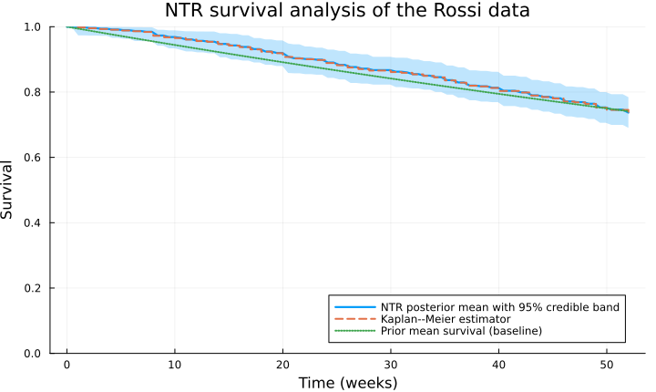
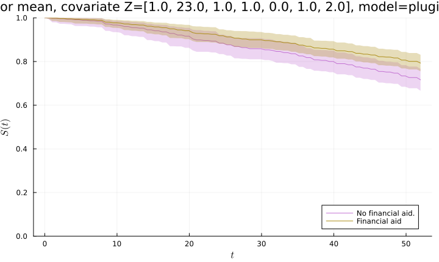

NTRsurv.jl
This package provides a Bayesian nonparametric workflow for survival analysis using neutral-to-the-right (NTR) priors, yielding principled and computationally efficient alternatives to classical frequentist Kaplan–Meier and Cox regression methods, with the possibility of incorporating prior information. The package implements prior and posterior simulation of survival curves, analytic posterior mean computation and Monte-Carlo credible, allowing Cox-type regression modeling.
Installation
The package is currently available on GitHub and can be installed using Julia’s package manager:
julia> using Pkg
julia> Pkg.add(url="https://github.com/alan7riva/NTRsurv.jl.git")Quick start: the Rossi recidivism data
We illustrate the workflow with the Rossi recidivism data. The event-time data contain observed follow-up times in weeks and indicators of whether a rearrest occurred during the follow-up period.
The sample size, number of observed events, and number of right-censored observations are:
julia> (nrow(Rossi), sum(δ), length(δ) - sum(δ))(432, 114, 318)
Constructing the NTR model
A SurvivalData object stores the observed times, censoring indicators, and the sufficient statistics required by the NTR posterior computations. The baseline determines the prior mean survival curve, while α modulates the prior dispersion. Here we use an empirical Bayes baseline constructed from the data.
julia> data = SurvivalData(T, δ);julia> baseline = EmpiricalBayesBaseline(data);julia> α = 2.0;julia> model = NeutralToTheRightModel(α, baseline, data);
Posterior mean and credible band
The posterior mean is available analytically, while credible bands are computed from posterior survival draws; both are evaluated on a time mesh t.
julia> posterior_mean = mean_posterior_survival(t, model);julia> band_lower, band_center, band_upper = posterior_credible_band(0.05, 3000, t, model; μ=false);
The argument p = 0.05, for the credble band, discards five percent of the l=3000 sampled paths in the Monte-Carlo band computation, yielding an approximate 95% credible band. The returned middle curve is the Monte Carlo posterior mean by default, when argument μ is omitted, or the Monte Carlo posterior median when μ = false.
For comparison, we also compute the Kaplan–Meier estimator using Survival.jl.
julia> km = fit(Survival.KaplanMeier, T, δ);julia> NTR_baseline = exp.(-baseline.κ.(t));
julia> NTR_plot = plot( t, band_center, ribbon = ( band_center .- band_lower, band_upper .- band_center), fillalpha = 0.25, linewidth = 2.2, xlabel = "Time (weeks)", ylabel = "Survival", ylims = (0.0, 1.0), label = "NTR posterior mean with 95% credible band", title = "NTR survival analysis of the Rossi data", size = (720, 430))Plot{Plots.GRBackend() n=1}julia> plot!( NTR_plot, km.events.time, km.survival, seriestype = :steppost, linewidth = 2, linestyle = :dash, label = "Kaplan--Meier estimator")Plot{Plots.GRBackend() n=2}julia> plot!( NTR_plot, t, NTR_baseline, linewidth = 2, linestyle = :dot, label = "Prior mean survival (baseline)")Plot{Plots.GRBackend() n=3}

Plug-in Cox-NTR regression
We set a RegressionSurvivalData object which stores the observed times, censoring indicators, covariates and required sufficient statistics for the Cox-NTR posterior computations.
julia> z_keys = [:fin, :age, :race, :wexp, :mar, :paro, :prio];julia> Z = [ [Float64(Rossi[j, key]) for key in z_keys] for j in 1:nrow(Rossi) ];julia> dataregre = RegressionSurvivalData(T, δ, Z);
A practical Cox-NTR workflow first obtains a point estimate of the regression coefficients and then conditions the Cox-NTR posterior computations on that estimate. For example, either estimates from an MCMC sampler of the posterior dstribution or using the frequentist estimator are good alternatives.
julia> # Robbins-Monro algorithm for variance of proposal distribution tuning sd_prop_tuned, s₀_tune, lliks₀_tune = robbins_monro_mh_within_gibbs_tune(150,100,x->NTRsurv.loglikelihood(x,α,baseline,dataregre),zeros(7),0.1.*ones(7),0.4.*ones(7),0.7;show_progress=false);julia> # Metropolis-Hastings within Gibbs chain run chain_s, _ = random_walk_mh_within_gibbs( 3000, x-> NTRsurv.loglikelihood(x,α,baseline,dataregre), s₀_tune, lliks₀_tune, sd_prop_tuned[end]);julia> # Posterior mean estimate of regression coefficients for plug-in NTR-Cox model c_post = mean(chain_s)7-element Vector{Float64}: -0.3638900381342008 -0.051369074112093766 0.39972765216634004 -0.15048242934047126 -0.48388475458898905 -0.053432733274530755 0.09405889243615771
We can see that the posterior mean estimator of the Bayesian NTR workflow is quite similar to the frequentist Cox partial likelihood estimator.
julia> Rossi.event = Survival.EventTime.(Rossi.week, Rossi.arrest .== 1);julia> freq_Cox_fit = Survival.coxph( @formula(event ~ fin + age + race + wexp + mar + paro + prio), Rossi);julia> c_freq = coef(freq_Cox_fit);
We construct the posterior mean plug-in Cox-NTR model and evaluate credible bands for patients with covariate vectors z_1 = [0.0, 23.0, 1.0, 1.0, 0.0, 1.0, 2.0] and z_2 = [1.0, 23.0, 1.0, 1.0, 0.0, 1.0, 2.0] corresponding to the median population with (z_1[1]=1.0) and without (z_1[1]=0.0) financial aid; both covariate vectors are contained in z_v = [z_1, z_2].
julia> NTR_Cox_model = CoxNeutralToTheRightModel( c_post, α, baseline, dataregre);julia> NTR_Cox_bands = posterior_credible_band( 0.05, 3000, t, z_v, NTR_Cox_model);julia> # Plot for financial aid vs no fiancial aid median survival curves NTR_Cox_plot = plot( t, NTR_Cox_bands[1][2], ribbon = ( NTR_Cox_bands[1][2] .- NTR_Cox_bands[1][1], NTR_Cox_bands[1][3] .- NTR_Cox_bands[1][2]), c=4, xlabel="\$t\$", ylabel="\$S(t)\$", fillalpha=0.3, label="No financial aid." , title="Median survival curves")Plot{Plots.GRBackend() n=1}julia> plot!( t, NTR_Cox_bands[2][2], ribbon = ( NTR_Cox_bands[2][2] .- NTR_Cox_bands[2][1], NTR_Cox_bands[2][3] .- NTR_Cox_bands[2][2]), c=5, fillalpha=0.3, label="Financial aid", size = (720, 430))Plot{Plots.GRBackend() n=2}

Public interface
Data and baseline specification
NTRsurv.SurvivalData — Type
SurvivalDataUnion type representing survival data objects for possibly censored to the right survival data in NTR models.
SurvivalData is an alias for the union of internal data objects SurvivalDataNoRep and SurvivalDataRep, corresponding respectively to datasets without and with repeated event times.
SurvivalData(T::Vector{Float64}, δ::Vector{Int64})Constructor for SurvivalData with observed event times T and censoring indicators δ , where δ[i] = 1 denotes an exact event and δ[i] = 0 denotes right censoring.
NTRsurv.RegressionSurvivalData — Type
RegressionSurvivalDataUnion type representing survival data objects for possibly censored to the right survival data with covariates in Cox NTR models.
RegressionSurvivalData is an alias for the union of internal data objects RegressionSurvivalDataNoRep and RegressionSurvivalDataRep, corresponding respectively to datasets without and with repeated event times.
RegressionSurvivalData(T::Vector{Float64}, δ::Vector{Int64}, Z::Vector{Vector{Float64}})Constructor for DataNTR with observed event times T, censoring indicators δ , where δ[i] = 1 denotes an exact event and δ[i] = 0 denotes right censoring, and covariates Z.
NTRsurv.Baseline — Type
BaselineImmutable object for baseline specification of NTR prior.
Baseline is specified by a cumulative hazard function and, optionally, its hazard rate and inverse cumulative hazard.
Baseline(κ::Function)
Baseline(κ::Function, dκ::Function)
Baseline(κ::Function, dκ::Function, κinv::Function)Missing fields are set to zero and must be supplied if required for likelihood evaluation or simulation purposes.
Fields
κ::Function: A priori cumulative hazard.dκ::Function: A priori hazard rate. Needed for likelihood evaluations.κinv::Function: A priori inverse cumulative hazard. Can be needed for simulation purposes outisde of NTRsurv's workflow.
NTRsurv.ExponentialBaseline — Function
ExponentialBaseline(λ::Float64)Construct Baseline object corresponding to an exponential baseline hazard with rate parameter λ.
NTRsurv.WeibullBaseline — Function
WeibullBaseline(k::Float64,λ::Float64)Construct Baseline object corresponding to a Weibull baseline hazard with shape parameter k and scale parameter λ.
NTRsurv.EmpiricalBayesBaseline — Function
EmpiricalBayesBaseline(data::SurvivalData,exact::Bool=false)Construct Baseline object corresponding to an empirically Bayesian exponential baseline hazard with rate which either matches the mean of all observations, default choice with exact=false, or only of the exact observations, chosen withexact=true.
NTRsurv.NeutralToTheRightModel — Type
NeutralToTheRightModelUnion type representing NTR models for possibly censored to the right survival data.
NeutralToTheRightModel is an alias for the union of internal structs NeutralToTheRightModelNoRep and NeutralToTheRightModelRep, corresponding respectively to modeling of datasets without and with repeated event times.
NeutralToTheRightModel(α::Float64,baseline::Baseline,data::SurvivalData
NeutralToTheRightModel(α::Float64,data::SurvivalData)Constructor for NTR model with a priori variance modulating parameter α, baseline object specification, and survival data object data. If baseline is not provided then EmpiricalBayesBaseline(data::SurvivalData,) is used.
NTRsurv.CoxNeutralToTheRightModel — Type
CoxNeutralToTheRightModelUnion type representing Cox NTR models for possibly censored to the right survival data with covariates.
CoxNeutralToTheRightModel is an alias for the union of internal structs CoxNeutralToTheRightModelNoRep and CoxNeutralToTheRightModelRep, corresponding respectively to modeling of datasets without and with repeated event times.
CoxNeutralToTheRightModel(b::Vector{Float64},α::Float64,baseline::BaselineRegreNTR,data::RegressionSurvivalData)
CoxNeutralToTheRightModel(α::Float64,data::DataNTR)Constructor for NTR model with a priori variance modulating parameter α, baseline object specification, and survival data object data. If baseline is not provided then EmpBayesBaseline(data::DataNTR,) is used.
NTRsurv.CoxNeutralToTheRightFullyBayesianModel — Type
CoxNeutralToTheRightFullyBayesianModelImmutable type for Cox NTR models in a fully Bayesian setting where regression coefficents are treated as random instead of fixed.
Construction for fully Bayesian Cox NTR models is done by providing a sample of regressión coefficients inside the array c_vec, a priori variance modulating parameter α, baseline object specification, Cox regression function g, and regressiom survival data object data. If baseline is not provided then EmpBayesBaseline(data::DataNTR,) is used.
Posterior summaries and simulation
NTRsurv.mean_posterior_survival — Function
mean_posterior_survival(t::Array{Float64},model::NeutralToTheRightModel)Function for posterior mean survival curve evaluation in NTR model over a grid of positive values t.
mean_posterior_survivalFunction for posterior mean survival curve evaluation over a grid
t: Time grid where posterior mean survival is evaluated.data: Data struct for NTR models, either type DataNTRnorep or DataNTRrep.baseline: Baseline struct for NTR models.α: Gamma process hyperparameter impacting Variance modulation for NTR survival curves.β: Gamma process hyperparameter chosen for centering of NTR survival curves on baseline.
NTRsurv.sample_prior_survival — Function
sample_prior_survival(t::Array{Float64},α::Float64,baseline::Baseline)Function for prior simulation, over a grid of positive values t, of NTR prior with variance modulating parameter α andbaseline object specification. Intended for prior elicitation before model setting.`
NTRsurv.sample_posterior_survival — Function
sampleposteriorsurvival
Function for simulation of posterior survival curves, over a grid of positive values t, for NTR model.
sampleposteriorsurvival
Function for simulation of posterior survival curves, over a grid of positive values t, for NTR model.
NTRsurv.credible_band — Function
credible_band( p::Float64, S::Matrix{Float64}, μ::Bool=true)Function for Monte-Carlo computation of (1-p)% survival credible bands and inner survival estimate, either mean survival, default μ=true, or median survival, alternative μ=false, from a matrix S with rows provided by samples of survival curves. The output is a tuple consisting of the lower band envelope, the inner survival estimate, and the upper band envelope in such order.
NTRsurv.prior_credible_band — Function
prior_credible_band( p::Float64, l::Int64, t::Vector{Float64}, α::Float64, baseline::Baseline, μ::Bool=true)Function for Monte-Carlo computation over time-grid t. with l a priori samples, of (1-p)% credible bands and either mean survival, default μ=true, or median survival, alternative μ=false, from NTR models with variance modulating parameter α and baseline struct. Output as in credible_band.
NTRsurv.posterior_credible_band — Function
posterior_credible_band( p::Float64, l::Int64, t::Vector{Float64}, model::NeutralToTheRightModel, μ::Bool=true)
posterior_credible_band( p::Float64, l::Int64, t::Vector{Float64}, z_new::Vector{Float64}, model::CoxNeutralToTheRightModel, μ::Bool=true)
posterior_credible_band( p::Float64, t::Vector{Float64}, z_new::Vector{Float64}, model::CoxNeutralToTheRightFullyBayesianModel, μ::Bool=true)Function for Monte-Carlo computation over time-grid t. with l a posteriori samples, of (1-p)% credible bands and either mean survival, default μ=true, or median survival, alternative μ=false, from either a NTR model struct or a Cox NTR model struct with fixed covariates z_new. Computation for fully Bayesian Cox NTR models does not require a number of Monte-Carlo simulations l as it already should containg a posterior sample of regression coefficients. Output as in credible_band.
Likelihood and MCMC utilities
NTRsurv.loglikelihood — Function
loglikelihoodFunction for log-likelihood evaluation of NTR model with a priori variance modulating parameterof α baseline object specification, and survival data object data.
loglikelihood
Function for sufficient statistics in Cox regression NTR model.
c: Vector of parameters for Cox regression functions.α: Gamma process hyperparameter impacting Variance modulation for NTR baseline survival.data: Data struct for Cox regression NTR models, either type RegressionSurvivalDataNoRep or RegressionSurvivalDataRep.baseline: Baseline struct for Cox regression NTR models.
NTRsurv.random_walk_mh — Function
random_walk_mh( b::Int64, lf::Function, s::Float64, lfs::Float64, prop_σ::Float64)Function for computation of a one-dimensional random-walk Metropolis-Hastings chain of size b with target distribution specified by log-density function lf, which may be known only up to an additive constant. Starting from the initial value s with valuation lfs when lf is applied. The proposal distribution is Gaussian random walk with standard deviation prop_σ.
NTRsurv.random_walk_mh_within_gibbs — Function
random_walk_mh_within_gibbs( b::Int64, lf::Function, s::Vector{Float64}, lfs::Float64, prop_σ::Vector{Float64})Function for computation of a one-dimensional random-walk Metropolis-Hastings chain of size b with target distribution specified by log-density function lf, which may be known only up to an additive constant. Starting from the initial value s with valuation lfs when lf is applied. The proposal distribution is Gaussian random walk with standard deviation prop_σ.
NTRsurv.robbins_monro_mh_tune — Function
robbins_monro_mh_tune(n::Int64,b::Int64,lf::Function,s₀::Float64,σ₀::Float64,
p_acc::Float64,γ::Float64,show_progress::Bool=true)Function for tuning the variance in the Gaussian proposal of a random walk Metropolis-Hastings algorithm, as implemented in random_walk_mh_within_gibbs(b,lf,s,lfs,prop_σ), with the Robbins-Monro algorithm targeting acceptance rate p_acc, for n iterations with learning rate γ, initial chain state s₀ and standard deviation σ₀. Default election show_progress=true displays a progress meter bar, while show_progress=false supresses it.
NTRsurv.robbins_monro_mh_within_gibbs_tune — Function
robbins_monro_mh_within_gibbs_tune(n::Int64,b::Int64,lf::Function,s₀::Vector{Float64},σ₀::Vector{Float64},
p_acc::Vector{Float64},γ::Float64,show_progress::Bool=true)Function for tuning the variance in the Gaussian proposal of a random walk Metropolis-Hastings within Gibbs algorithm, as implemented in random_walk_mh(b,lf,s,lfs,prop_σ), with the Robbins-Monro algorithm targeting acceptance rate p_acc, for n iterations with learning rate γ, initial chain state s₀ and standard deviation σ₀. Default election show_progress=true displays a progress meter bar, while show_progress=false supresses it.
NTRsurv.acceptance_rate — Function
acceptance_rate(v::Vector{Float64})Function for computation of the acceptance rate of a Markov chain with values store in the array v.
Index
NTRsurv.BaselineNTRsurv.CoxNeutralToTheRightFullyBayesianModelNTRsurv.CoxNeutralToTheRightModelNTRsurv.NeutralToTheRightModelNTRsurv.RegressionSurvivalDataNTRsurv.SurvivalDataNTRsurv.EmpiricalBayesBaselineNTRsurv.ExponentialBaselineNTRsurv.WeibullBaselineNTRsurv.acceptance_rateNTRsurv.credible_bandNTRsurv.loglikelihoodNTRsurv.mean_posterior_survivalNTRsurv.posterior_credible_bandNTRsurv.prior_credible_bandNTRsurv.random_walk_mhNTRsurv.random_walk_mh_within_gibbsNTRsurv.robbins_monro_mh_tuneNTRsurv.robbins_monro_mh_within_gibbs_tuneNTRsurv.sample_posterior_survivalNTRsurv.sample_prior_survival